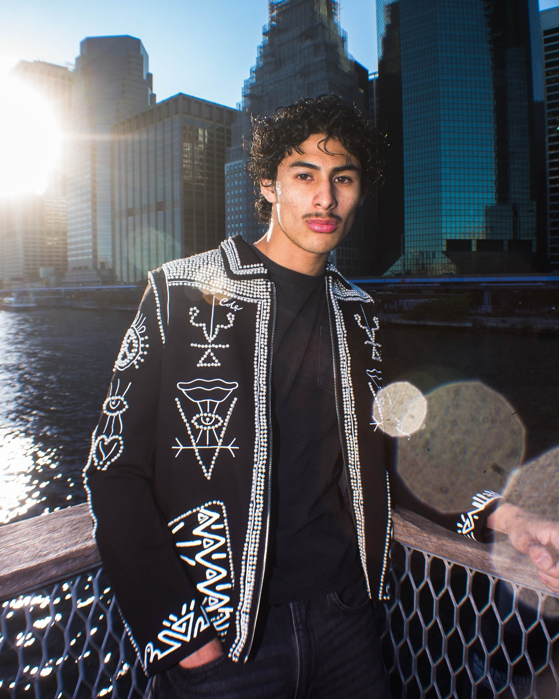
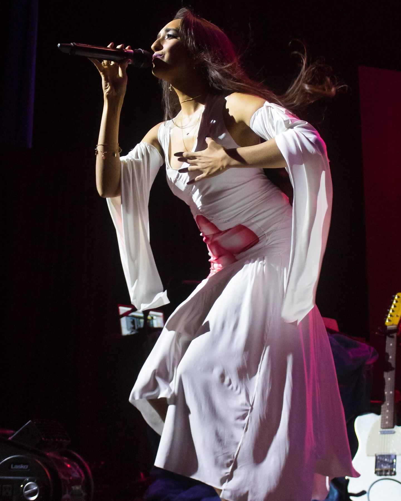

The gallery
Photography, selected frames.
Kevin shot actively in New York City — fashion weeks, brand shoots, portraits, and tour dates — and less since moving to Champaign for UIUC. A selection of the work, 2023–2025. Every frame links to its original Instagram post.
Fashion & Designer Collabs
Commissioned and collaborative fashion work across New York. Kevin shot and directed the "Calm & Collected" story for @cole4steeze's pearl-embedded, hand-painted jacket (designer @tcolezy, models @avileschrs and @tshyradlevahn), styled the "Blocking Out the Sun" shoot around pieces from Rose Jeans, Icon Gallery, and Grise NYC, and lensed the FLY2K Y2K story and the Bushwick "just business" editorial. The Black Out Shoot rounded out the run — "tag who you see."




Fly Kids Community
Kevin was the house photographer for Fly Kids, the NYC creative collective. For Juneteenth, the crew staged "a radiant celebration of unity and pride, where every frame was a testament to the vibrant tapestry of our black culture" — honoring heritage "with every click of the camera." A spring gathering became "a celebration of our diverse styles," each member expressing themselves "uniquely through fashion."


New York Fashion Week
NYFW from both sides of the rope. Kevin shot for Arte Servizio at the Daily Paper NYC flagship event, covered the Runway7 runway, and collected "a few portraits I've done over the course of fashion week" — alongside his own favorites "from my antics this fashion week."


Nairobi Editorial
"Enchanted Forests, Ethereal Waters, Bewitching Beauty." Shot in Nairobi, Kenya with model @imaanghassani — Kevin on photo and lighting.

Portraits
Portraits from grad season, studio sessions, and slow afternoons. "Vulnerability," a Washington Square Park grad series shot as a no-flash challenge ("#Washdays are back! HMU for grad shoots"), and a sitting for @primadonnazine with artists @seramari and @blakexchristopher.


Beach Days
Summer light. His last beach shoot of the summer at Far Rockaway Beach 59th Street, and a "sun basking" afternoon at a Harlem brownstone shot alongside @kmarsflics_ and @satnpm for @flykids___.


San Francisco
"San Francisco through my lens" — the Golden Gate and the city, January 2024. ("These photos corrupted my hard drive so I had to post.")

On Stage
Concert photography: @raveena_aurora and @tinashenow on the MATCH MY FREAK world tour, shot for agency @santulancreative.
